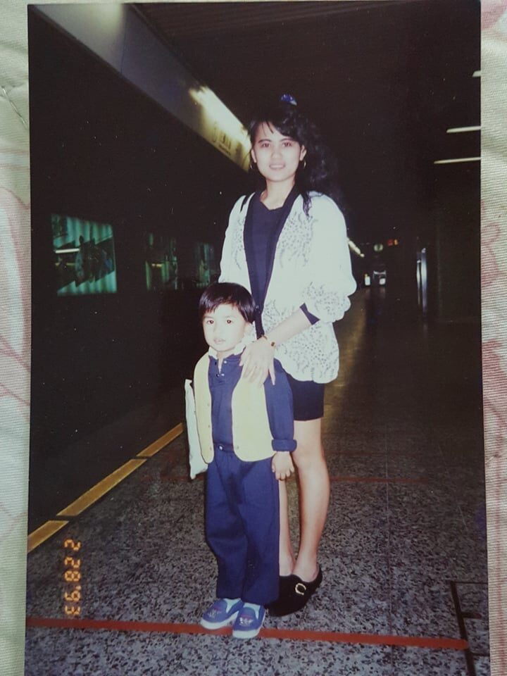
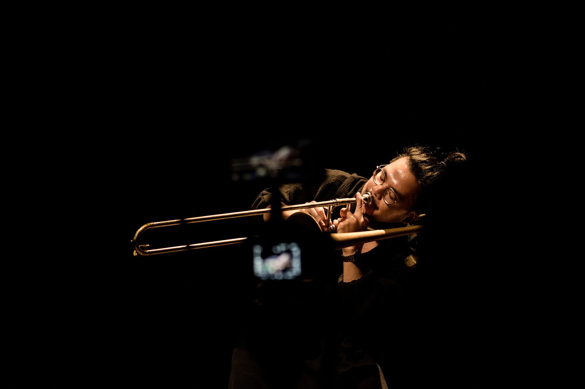
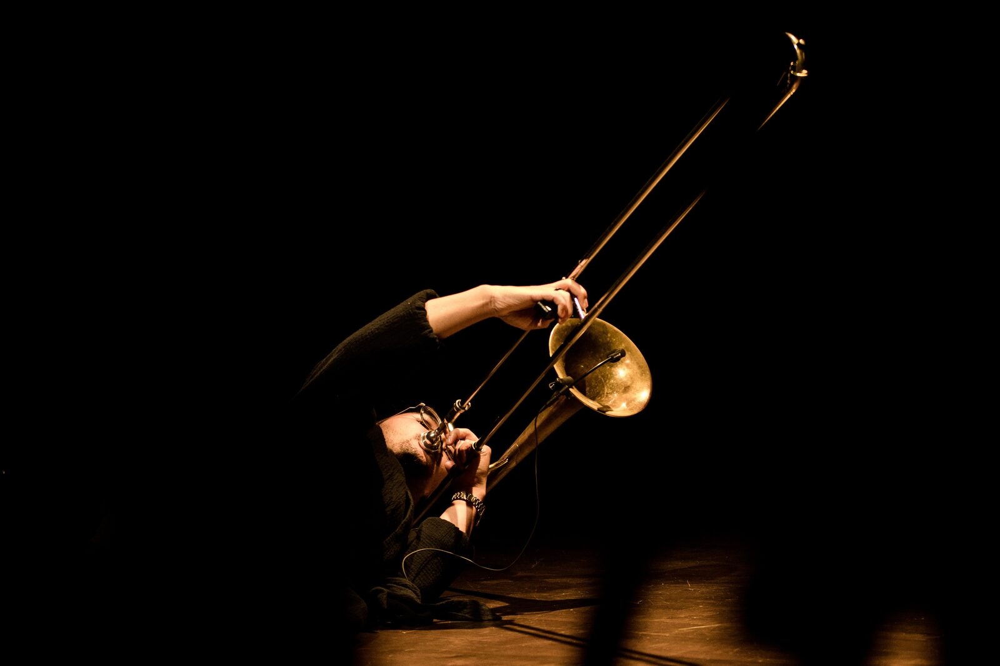
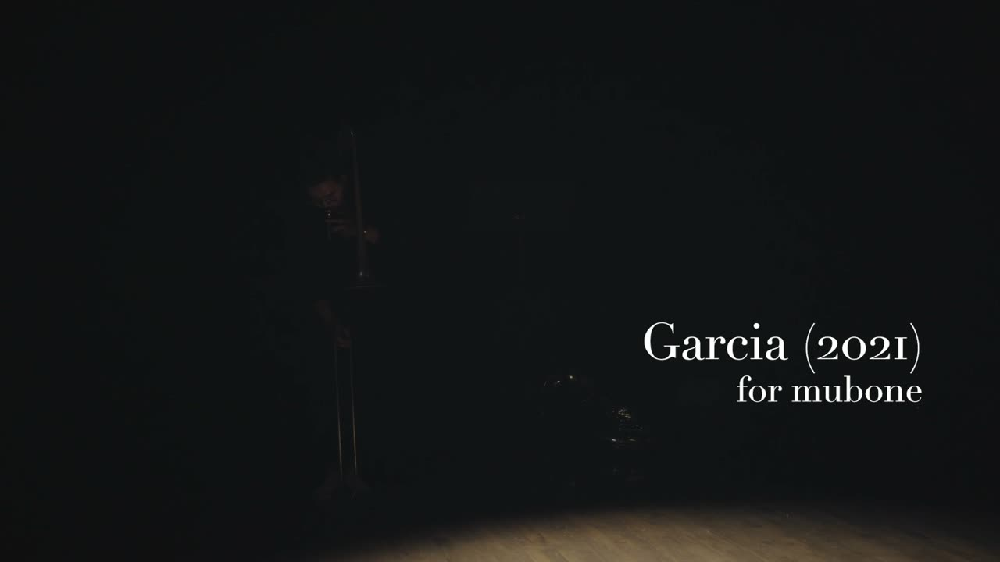

Garcia (2021) for Mubone
Project Description
This performance is part of an ongoing series of collective creations for the mubone augmented trombone and is the culmination of the Mubone Research & Creation Project that instrument designer Travis West and I began in 2019. After 3 years of developing and prototyping primarily in solo contexts, we began exploring new interdisciplinary pathways for the mubone through the creation of three new artworks. Each work pairs me, the mubonist, with an artist from another discipline - choreography/movement, composition/sound art, and new media.
The mubone is an augmented instrument that tracks the orientation of the host object, a trombone, which effectively captures the performer’s movements for the purposes of real-time recording, playback, layering, and processing vis-à-vis a virtual 3D environment and a bespoke granular synthesis engine called mugranular. A Nintendo Switch Joy-Con is used for basic interfacing with a Max/MSP patch. Mubones are like trombones; they are a type of instrument that anyone can, in principle, make and play. There is not a single capital-M "Mubone".
Garcia is the result of the pairing with choreographer Bettina Szabo. Our collaboration approach focused on centering choreography, movement, and gesture in an attempt to foreground these elements in the work. We mapped out the choreography before drafting the sound score; this approach contributed to a convincing performance that showcases the capacity for the mubone to achieve a symbiotic relationship between the movement, sound, and electronics.
The piece is autobiographical and explores themes around immigration, otherness, and social acceptance. These are challenges that we shared as first generation immigrants to Canada. The structure of the piece follows a chronological timeline beginning with naive childhood curiosity and continuing with an adulthood consumed by memory reactivation, and finally ending with the fragility and nostalgia in old age.
Type of submission
“New NIME” - traditional NIME music sessions aimed at showcasing pieces performed or composed with new interfaces for musical expression.
Program Notes
Kalun Leung (Performance, Composition)
Bettina Szabo (Choreography)
Travis West (Instrument Design)
Garcia is the middle name of my childhood nanny who was my primary guardian from birth to age 4. The single digit years of a human life are so formative and foundational, but it is often this decade that is most easily forgotten. When Jackie found me on Facebook in 2020 during a time of intense identity reckoning that was brought on by COVID-19 among other challenges, I saw it as a fascinating opportunity to uncover my past through her memories. What was I like? Was I a brat?
This piece is inspired by this process of uncovering memories through others and through self-discovery. Having immigrated to Canada from Hong Kong at age 4 with only one memory from this time, reconnecting with my nanny was a way for me to reconstruct how I navigated immigration and assimilation as a child, and to ascertain why I am the way I am.
Sounds are recorded, triggered and manipulated via this memory "sound palette" that is represented by the space around the performer, and the trombone is used as a memory logger and jogger, stylized by the performer's movements.
Media


My nanny Jackie and I in the Hong Kong MTR, 1993.


Photo: Jean-Baptiste Demouy
From Garcia live performance, Nov 17, 2021


Photo: Jean-Baptiste Demouy
From Garcia live performance, Nov 17, 2021

▶Video: Jeremi Roy and Chloé Lampron-Gingras
Performance captured live in concert at La Chapelle Historique du Bon Pasteur in Tiohtià:ke/Montréal on November 17, 2021.
Ethics Statement
As the primary creative lead, I have carefully considered the ethical implications of creating new work at the intersection of technology, music and the performing arts.
The subject matter in Garcia, although not realized in the form of spoken word, is still sensitive and is the result of a shared understanding and lived experience between Bettina Szabo and I. This consideration was prioritized in an effort to represent and reflect my experience in an authentic way.
As a cisgender male, I recognize the privilege that I gain solely based on my gender, especially in an industry, namely music and technology, that is dominated by men. These privileges are further amplified with the power imbalance that is created in a funder-fundee model.
I seek to direct my energy and resources in amplifying the voices of those who do not share that privilege, especially women and non-binary creators, artists of colour and racially marginalized folks, queer and LGBT communities, and those at the intersections of these groups. At each stage of the process, I sought to make issues on authorship, ownership, decision making, and financing transparent and equitable for collaborators.
I want to acknowledge that this work was created and presented on unceded Indigenous lands. As a settler, I am confronted with colonialist and Eurocentric frameworks that I must learn to understand and dismantle.
Acknowledgements
This work was made possible through the generous support of the Canada Council for the Arts.